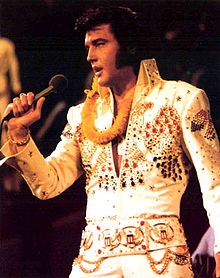

<div>블록과 <span>인라인
내가 사람의 방언과 천사의 말을 할 지라도 사랑이 없으면 소리 나는 구리와 울리는 꽹과리가 되고, 사랑이 없으면 아무 것도 아니라.
~우리 모두 사랑하며 살아요~
이미지 삽입
엘비스 프레슬리의 사진입니다.



리스트 만들기
- Unorderd list라고 써서 ul
- 순서가 없는 리스트입니다.
- 중첩 리스트: 리스트 안에 리스트를 만들수도 있음.
- 순서 없는 거에 순서 있는 거 넣어도 되고, 그 반대도 가능.
- ul이 unordered list였다면
- ol은 Ordered list
- 순서가 있는 리스트이며, 별도로 정의하지 않는 한 1,2,3이 붙음
<ol type=A>와 같이, 순서가 있는 리스트(ol)에서는 리스트의 마커 종류를 설정할 수 있다.- 단, HTML5 표준에서는 리스트나 아이템을 꾸미는 모든 작업을 CSS 스타일로 작성하는 것을 권장하고 있다.
- 제가 좋아하는 것
- 오락실 리듬게임
이시국에?
- 뜨끈한 국밥 대신 시원한 잔치국수
- 언어 배우기
- 라면 끓이기
- 물 550ml 붓고 건더기/대파/쪽파 넣고 끓여요.
- 끓으면 스프를 넣고, 그리고 면을 넣어요.
- 3분 지나면 계란을 넣고, 취향에 따라 휘젓습니다.
- 1분후 불끄고 옴뇸뇸!
- san-i
- 건강하다(healthy)
- sana: 건강한
- sano: 건강함
- malsano: 건강하지 않음
- malsanulo: 건강하지 않은 사람 (malsana homo)
- malsanejo: 병원 (건강하지 않은 이들의 장소라는 뜻에서)
표 만들기
표 제목
| 번호 | 이름 | 단가 |
|---|
| 1 |
밍 |
132 |
| 10 |
Gildong Hong |
10 |